The paper is a quarter of the job. A good print with a bulging seam looks like a last-minute wrap, and plain kraft with a sharp crease and one good ribbon looks like it came from a shop.
So this list is about technique as much as pattern. Each idea pairs a paper with the one fold, tape or ribbon decision that makes it work.
There are 24 ideas in five color stories. Read the rules first, then pick one story and wrap the whole pile in it.
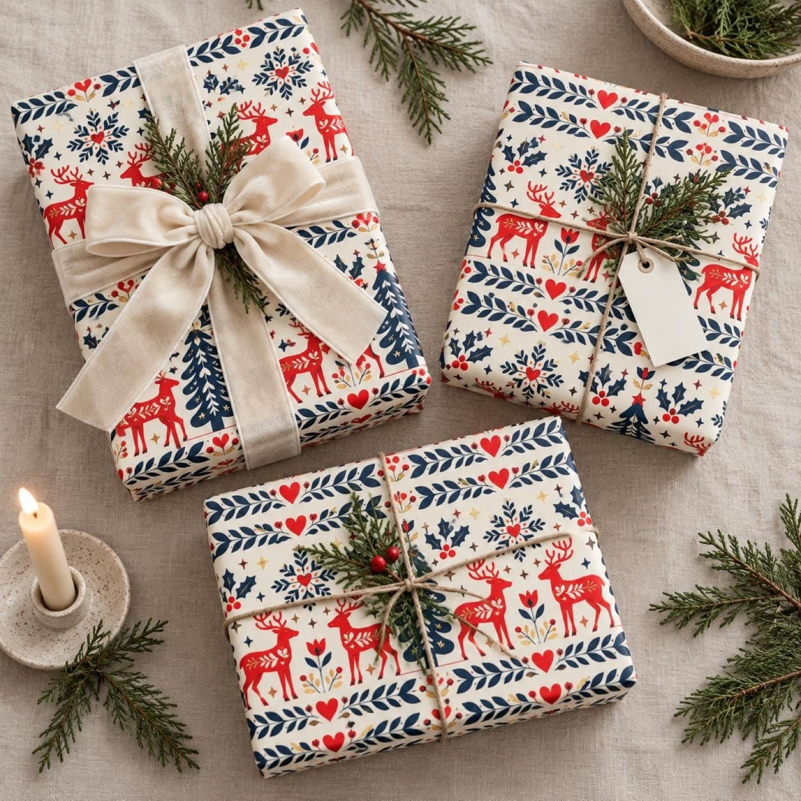
Five Rules for a Gift That Looks Wrapped by a Pro
- Cut to the box plus two inches. Paper that wraps around with a two-inch overlap lies flat. Any more makes thick corners, any less leaves a gap at the seam.
- Double-sided tape on every seam. It disappears, and it forces a straight line. Visible tape is the first thing the eye finds.
- Crease every edge against a ruler. A fold pressed along a ruler edge is what makes a box look tailored instead of covered.
- Mix patterns by scale, not by color. One stripe, one small print and one large print in the same palette read as a set. Three colors read as a jumble.
- Give the ribbon one job. A busy paper gets a plain ribbon. A plain paper can take a bold one. Never both busy.
Classic Red, Green and Gold
1. Set the Table Before You Cut Anything
Wrapping goes twice as fast when the scissors, tape, ribbon, tags and ruler are already on a tray. Most of the time spent wrapping is spent looking for the tape.
This table has holly paper, two ribbon spools, a dispenser and scissors within reach, and the wrapper has not stood up once.
Work in batches. All the large boxes in one paper, then all the small ones in the next. Every change of paper costs five minutes.
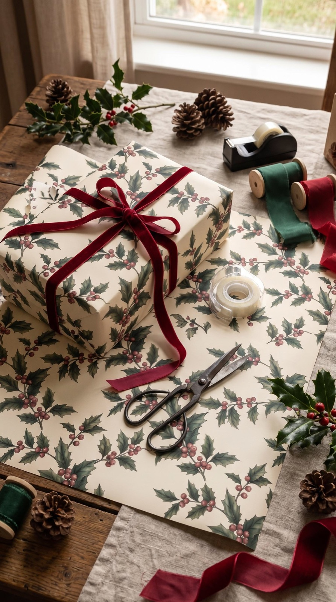
2. Line Up the Stripes With a Ruler
Striped paper shows every crooked fold. Run the stripes the same way on every face, and line them up at the seam with a ruler before the tape goes on, as on this red and white box.
Keep the ribbon thin and metallic. A thin gold ribbon, as here, sits on top of the stripes. A wide one fights them.
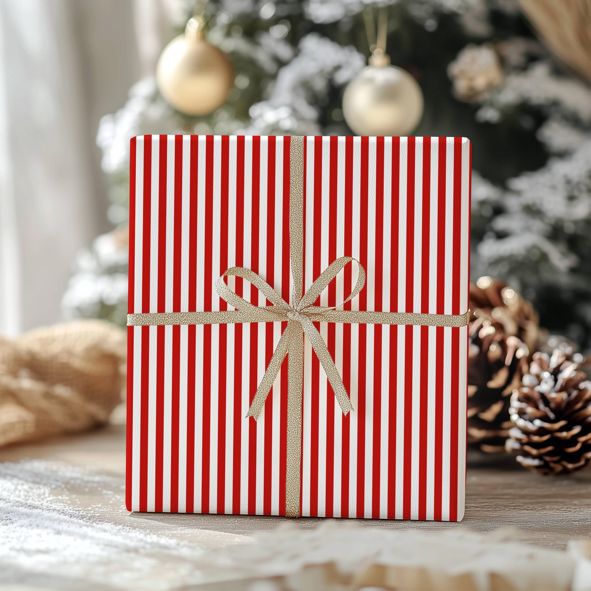
3. Cut Tartan Along a Line
Plaid hides small mistakes because the eye follows the lines. It also exposes a crooked cut, because the lines run off the edge.
Cut along one line of the pattern for every edge and the folds come out straight by themselves.
A satin ribbon in the same green, as on this box, reads as rich. A cream ribbon on the same paper reads as lighter and more modern. Both work. Pick one for the whole pile.
Tartan paper is usually heavy. Fold the ends with a bone folder or the back of a spoon so the creases stay sharp.
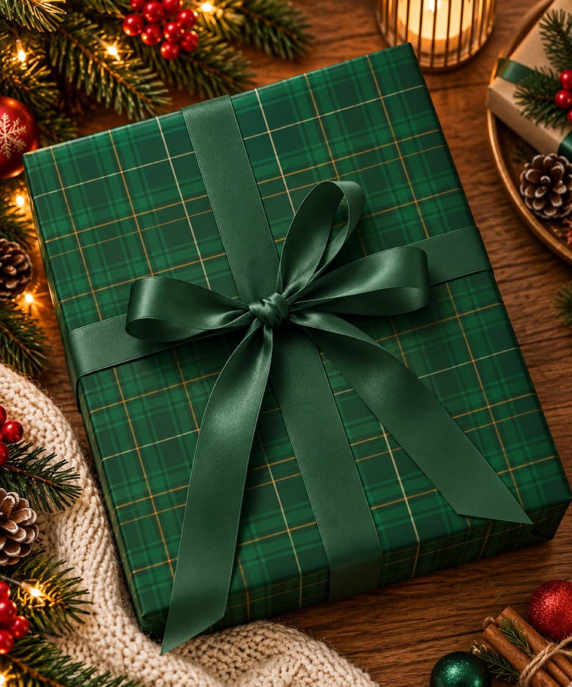
4. Calm a Busy Print With Velvet
A holly print has four colors already. The ribbon should add none. Dark green velvet about one and a half inches wide, as here, ties the box without adding to the noise.
Cut the ribbon ends in a V. They hang evenly and do not fray.
The sprig of real holly tucked under the knot is a one-day decoration. Add it the night before.
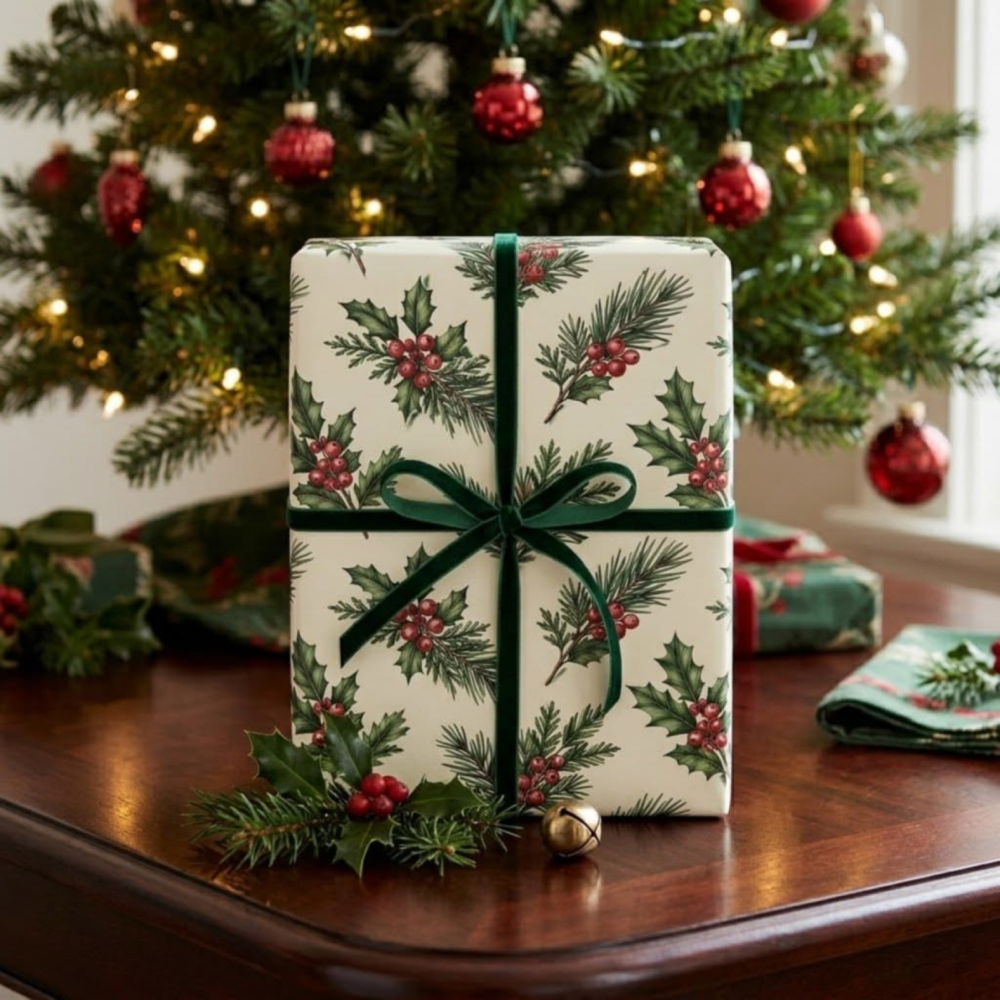
5. Fold Foil Lightly
Foil-stamped paper cracks along a hard crease and the gold flakes off. Fold it with the fingers, not a ruler edge, and keep the double-sided tape on the seam only.
Paper this dressed needs no bow. A single cross of plain ribbon on these red and gold tree boxes is enough.
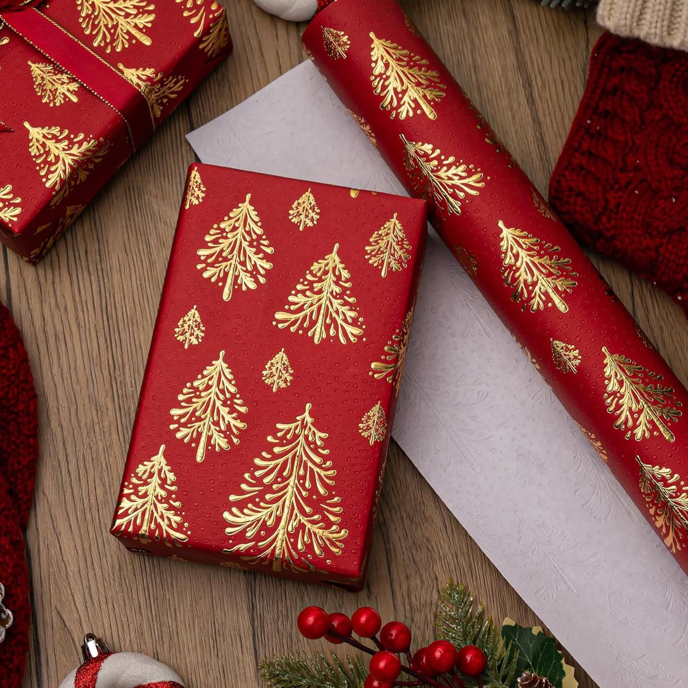
6. Wrap Black Paper With Clean, Dry Hands
Black paper makes gold look expensive and shows every fingerprint. Wash and dry your hands before the roll comes out, and handle the sheet by the edges.
A wide white satin ribbon, as on this box, gives the contrast that makes the gift stand out under a lit tree.
Double-sided tape only. A strip of clear tape on black paper is visible from across the room.
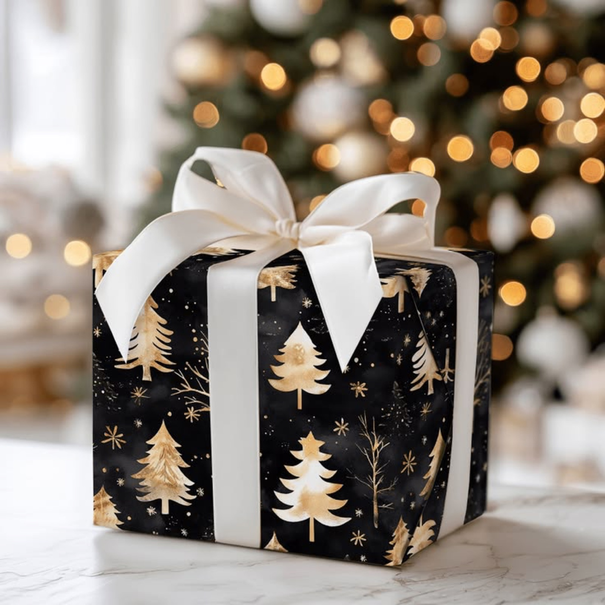
7. One Loud Paper, Two Quiet Neighbors
A retro candy cane argyle is a lot of pattern. Give it a single glitter ribbon and one tag, as here with a Santa tag, and stop.
Then put plain red and plain green gifts beside it in the pile. The loud paper becomes the accent instead of the whole stack shouting.
Glitter ribbon sheds. Tie it last, over the paper, and keep it off the other gifts.
The tag goes under the ribbon, not on a string. Strings tangle in a pile.
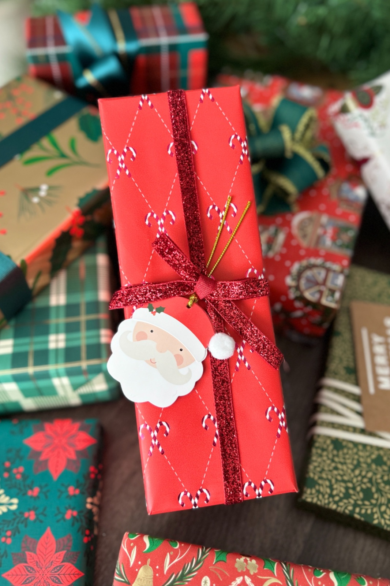
Blue and Winter Patterns
8. Tie the Ornament On, Never Glue It
A single-color toile looks like good china, and a navy ribbon keeps it that way. One or two ornaments tied into the bow, as on this box, replace the gift tag.
Tie them with a loop of the same ribbon. Hot glue ruins the ornament and the paper, and the recipient should be able to hang it on the tree that night.
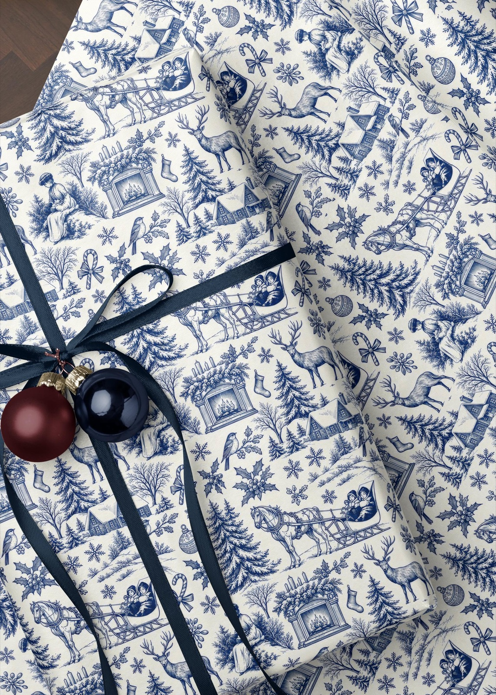
9. Wrap the Whole Pile in One Pattern
Twelve different papers under one tree look like a shop floor. One toile in black and cream, as this stack is, with the same blue ribbon on every box, looks like a decision.
The variety comes from the box sizes. Keep the bows a similar size so no one gift dominates.
A small tag on each box, under the ribbon. With one paper, the tags are what tell the gifts apart.
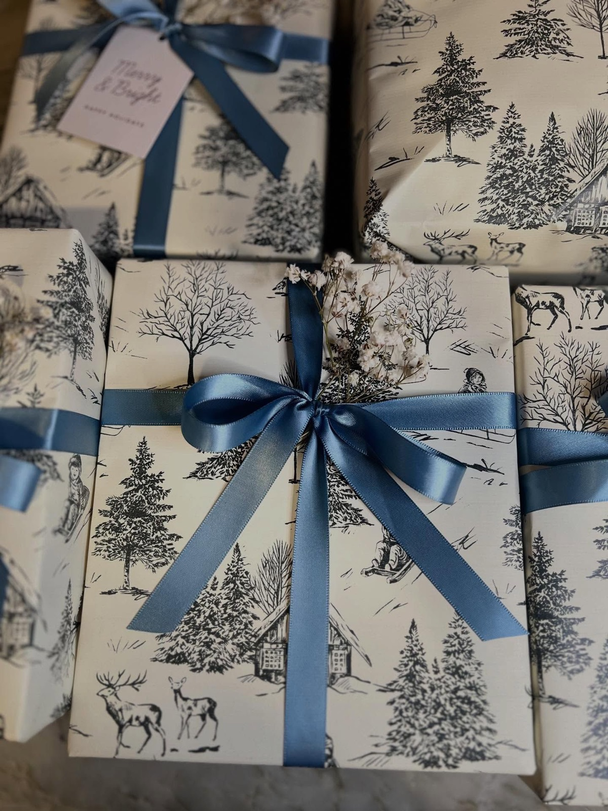
10. Punch the Tags From Cardstock
White snowflakes on blue is one of the easiest pairings to finish. Kraft twine and a plain white tag, as here, and the box is done.
Cut the tags with a two-inch punch from white cardstock. Stars and hearts, as on these, are faster than scissors and come out identical.
Write the names in white gel pen on blue tags, or pencil on white. Ballpoint smears on coated card.
Twine wraps twice around the box. Once looks unfinished, three times looks like parcel post.
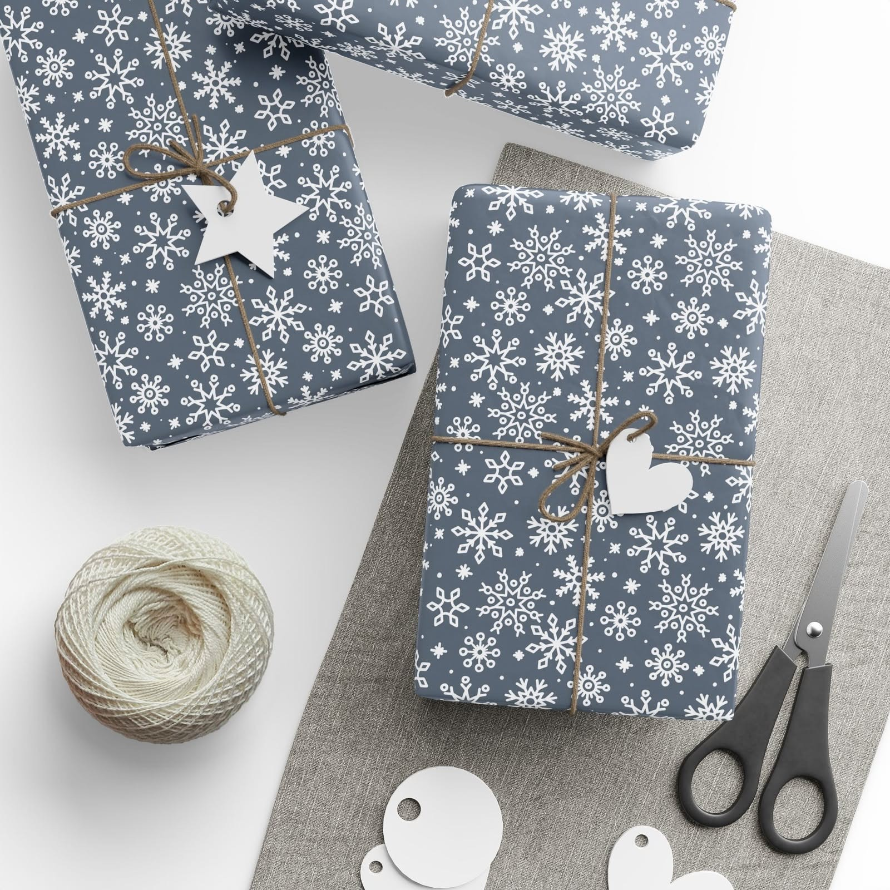
11. Handle Metallic Paper by the Edges
Metallic paper catches the tree lights, and it catches fingerprints just as well. Hold the sheet by its edges and wrap on a clean surface.
Use wired ribbon so the bow holds its shape, and tape the bow to the box underneath, as this silver glitter bow is. Glitter ribbon slides off anything smooth.
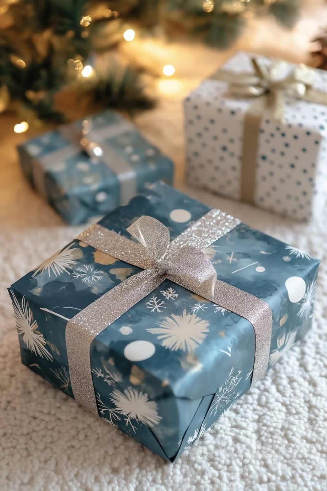
12. Let a Scenic Paper Tell the Story
A ski-scene paper is already a picture. One dusty blue velvet ribbon and a sprig of greenery, as on this stack, is the whole decoration.
A small jingle bell tied into the bow gives the gift a sound when it is picked up.
If the gifts will be stacked, press the bow flat under a book for an hour. A crushed velvet bow does not recover.
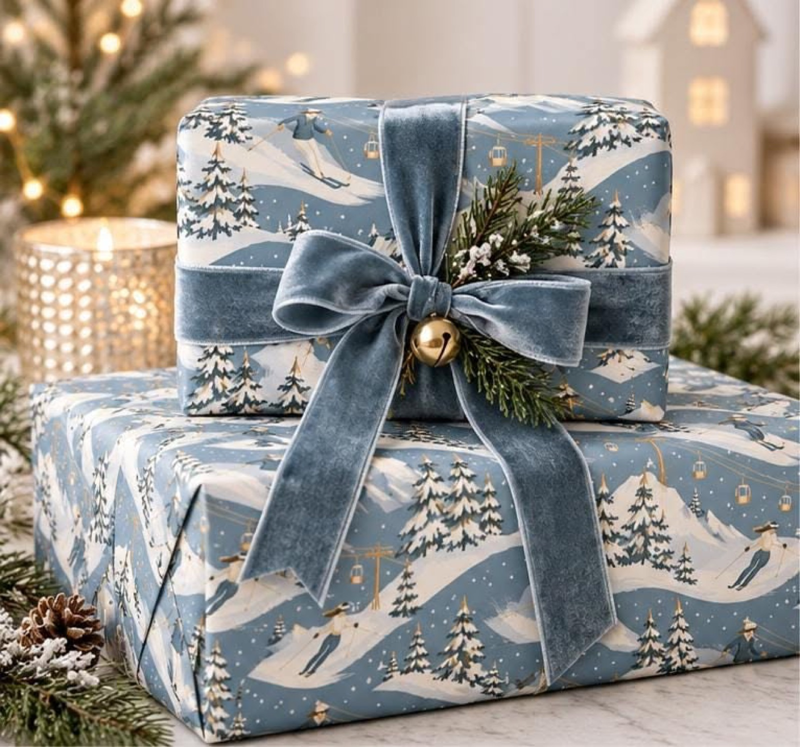
13. Match the Print Scale to the Box
A busy village print suits a child's gift, and a plain white ribbon keeps the print as the focus, as here.
Small boxes take small patterns. A large print on a small box shows half a house and looks cut off.
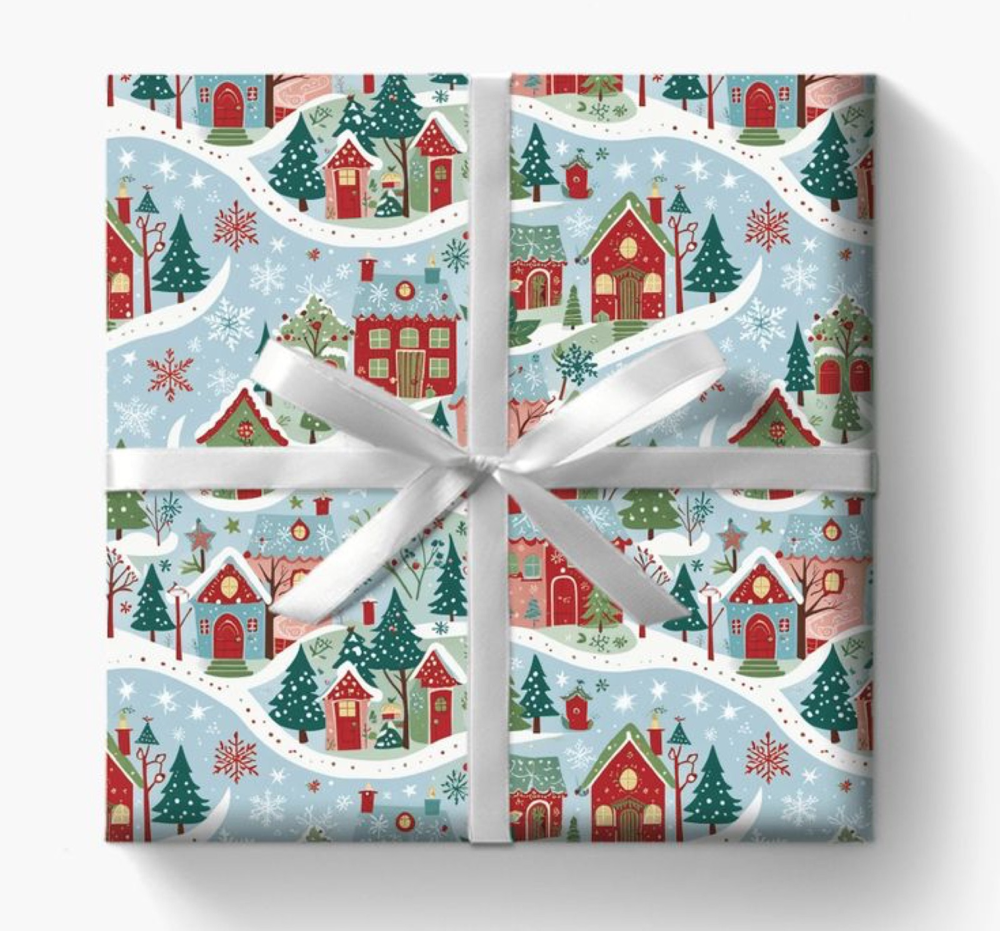
Scandinavian and Folk Prints
14. Give Folk Prints a Neutral Ribbon
Folk prints carry red, navy and cream in the pattern already. The ribbon should be one of those three, and cream velvet, as on these reindeer boxes, is the quietest choice.
Fresh greenery under the ribbon looks right with a folk print. It also drops needles after two days, so add it the night before the gifts go under the tree.
Tie the ribbon across the short side of a rectangular box. Across the long side it looks like a belt.
Keep tags plain. A white card on twine, as here, is enough.

15. Use Twine When the Paper Is Busy
Jute twine adds texture without adding a color, which is why it suits a navy folk print, as on this box, where any ribbon would be one color too many.
Wrap it twice around in each direction and tie a small bow on top.
On glossy paper the knot slides. A drop of glue under the knot, or a square of double-sided tape, holds it.
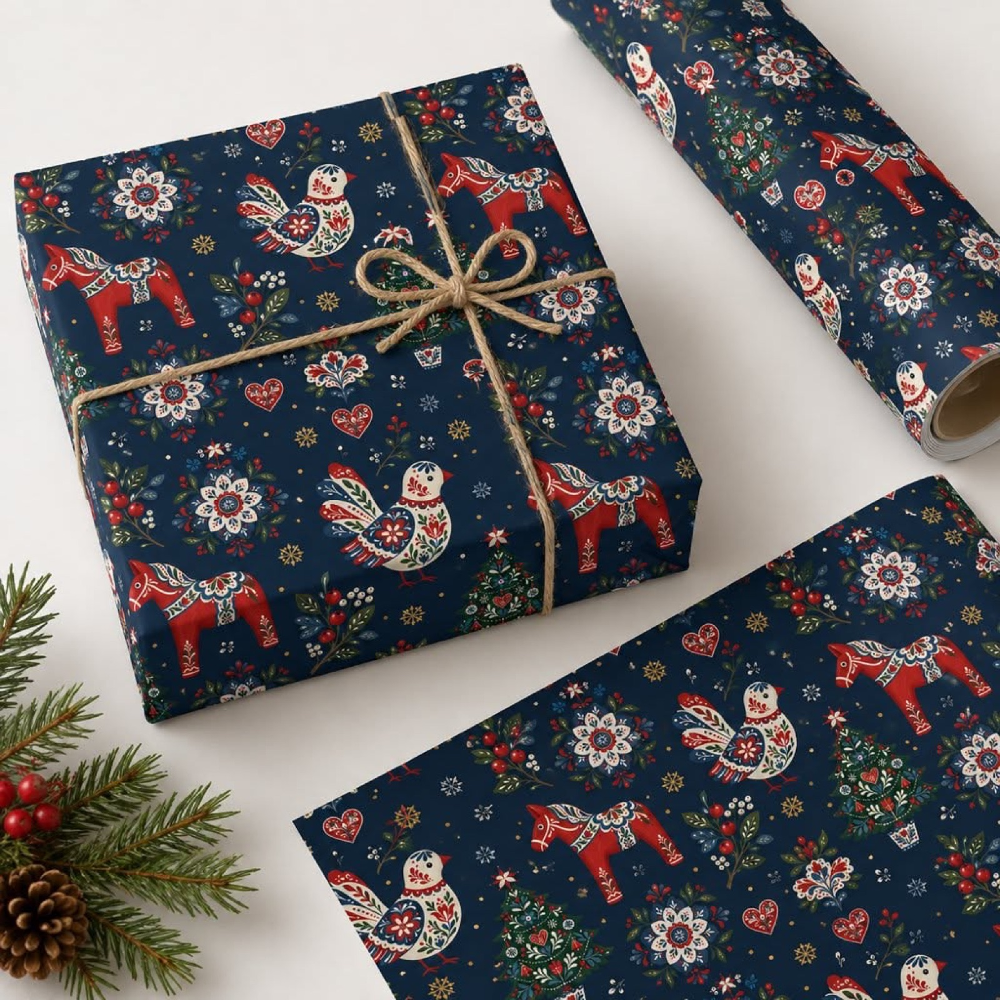
16. Tape the Ribbon Before You Tie It
Satin slides on paper, and a satin bow that was tight at midnight is loose by morning. Put a square of double-sided tape under the ribbon where it crosses, then tie the bow, as on this nutcracker box.
Character prints suit children and hostess gifts. A white bow adds polish without competing with the figures.
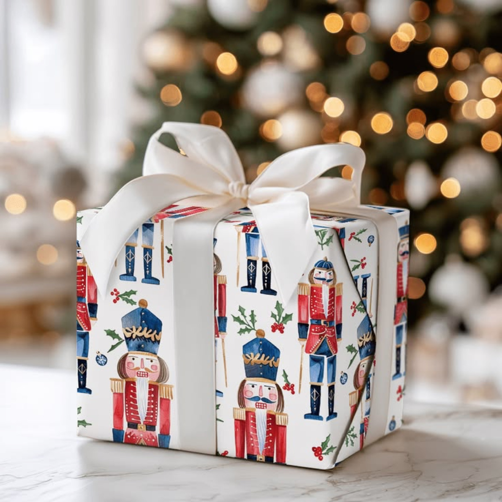
Kraft, Burlap and Natural Wraps
17. Measure the Ribbon Before You Cut
Kraft plus one rich ribbon is the best budget wrap there is, and the ribbon is the part people waste. Wrap it once around the box in each direction, then add 12 inches for the bow, and cut.
Burgundy velvet about one and a half inches wide, tied in a double bow, as on this box with a sprig of greenery.
Kraft creases cleanly. Press every edge along a ruler and the box looks tailored.
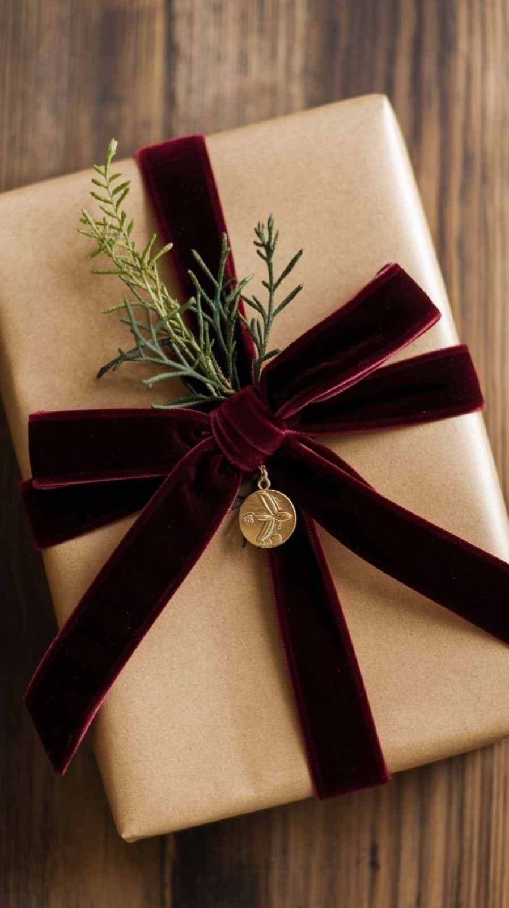
18. Dry the Orange Slices a Week Early
A dried orange slice is a tag that smells like Christmas. Slice at a quarter inch, blot, and bake at 200°F for three to four hours, flipping once.
Let them cool completely before they touch paper, or they stain.
Tuck a slice and a cinnamon stick under the twine with a sprig of pine, as on this kraft box.
They keep for the season in a dry box. Make them with the mantel garland oranges and do both jobs in one afternoon.
19. Let Wheat Replace the Bow
A small bundle of dried wheat under twine, as on this reindeer kraft box, does the bow's job with more texture and no ribbon cost.
Dried stems shed. Secure the bundle with the knot itself, not a separate tie, and wrap these gifts close to the day.
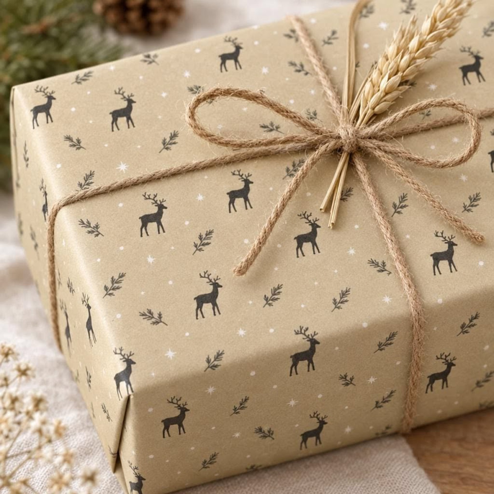
20. Stamp Your Own Paper With a Cardboard Tube
Pinch a toilet paper tube into a heart or a petal, dip the end in white acrylic paint, and press it onto kraft. Ten minutes makes a roll of paper nobody else has, as on these boxes.
Let the sheets dry flat for 20 minutes before wrapping, or the paint smudges at every fold.
A sprig of greenery and a kraft tag finish it. Nothing else, or the stamping disappears.
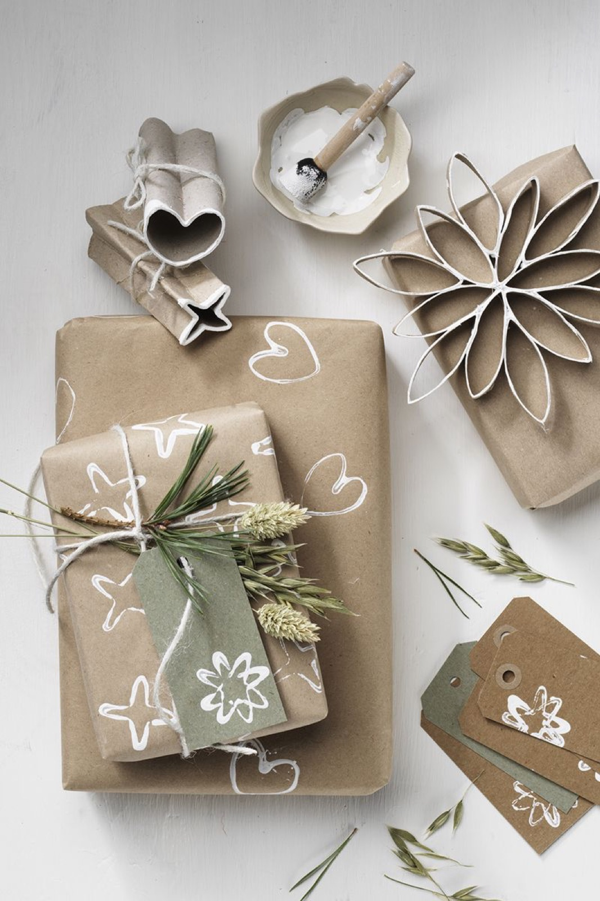
21. Glue the Burlap, Do Not Fold It
Burlap fights every crease and sheds while it does it. Tape the corners from the inside and hold the edges with fabric glue, and it stays put, as on these five boxes.
Orange wired ribbon and a pine sprig, as here, give it warmth. Wired ribbon is not optional on burlap. Unwired ribbon disappears into the weave.
22. Layer Two Ribbons in One Tone
Neutral paper looks rich when the ribbon has depth. A wide brown satin ribbon under a narrow gold one, tied together, as on this cream box, gives a plain wrap two layers.
Keep both ribbons in the same warm family. A cool silver over a warm brown looks like a mistake.
Trim both ends at the same angle.
The subtle tree print on this paper is the right scale for layered ribbon. A bold print under two ribbons is too much.
Pink and Burgundy
23. Seal Velvet Ends With Fray Stop
Pink and burgundy is the soft alternative to red and green. Striped paper, one burgundy velvet ribbon and a matching tag, as on these boxes, is the full look.
Cut velvet frays within a day. A dab of clear fray-stop liquid on each cut end keeps the edges clean.
Use the same burgundy on the tag and the ribbon. Two shades of burgundy look like a mismatch.
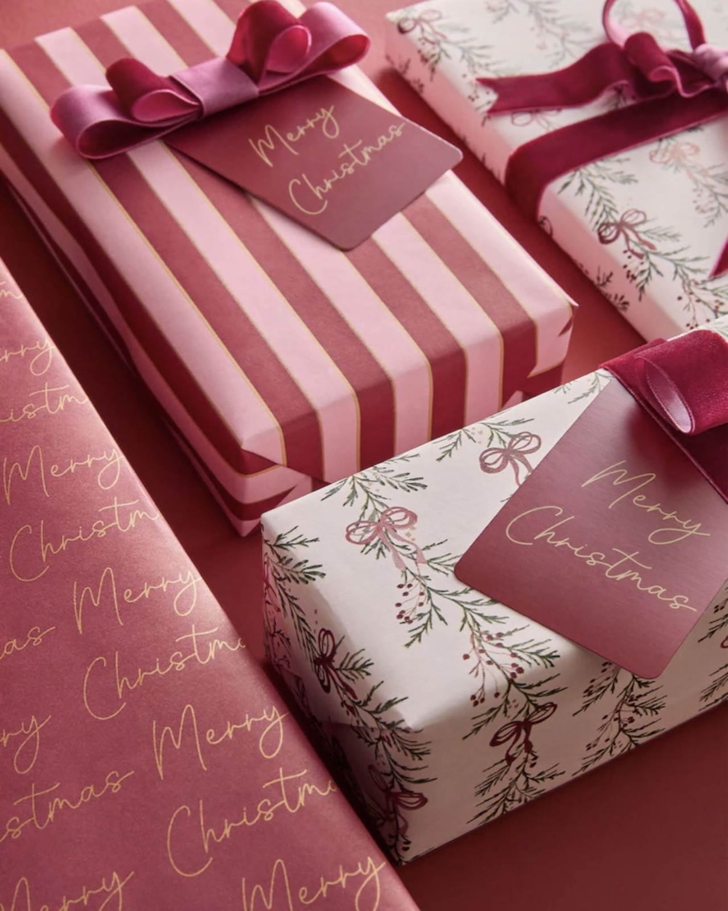
24. Mix Three Prints, Keep One Ribbon
Stripe, small floral and script, all in the same pink family, as this stack is, read as a set because the color never changes. Change the scale, never the palette.
One burgundy ribbon on every box is what holds the mix together. Vary the ribbon and the set falls apart.
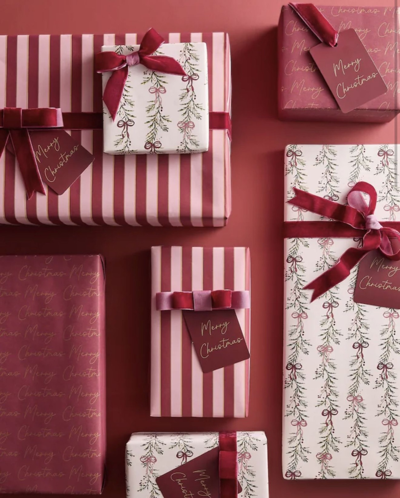
Common Mistakes (and Fixes)
- Mistake: too much paper at the ends. Fix: trim so each end flap is about a third of the box side. Fat flaps make lumpy corners.
- Mistake: visible tape. Fix: double-sided tape on every seam and flap. Clear tape on the surface is the first thing the eye finds.
- Mistake: thin ribbon on a big box. Fix: widen the ribbon as the box grows. About one and a half inches for a large gift.
- Mistake: fresh greenery tied on weeks ahead. Fix: add real sprigs the night before, or use faux ones that keep.
- Mistake: hot glue on paper. Fix: glue dots or double-sided tape. Hot glue wrinkles the sheet and shows through.
Where to Start
Twenty-four ideas is a menu, not a to-do list. Choose one or two color stories, buy the matching ribbon and tags in one trip, and wrap the whole pile in a single evening.
Matching gifts look intentional under the tree, even when the boxes inside came from six different shops.